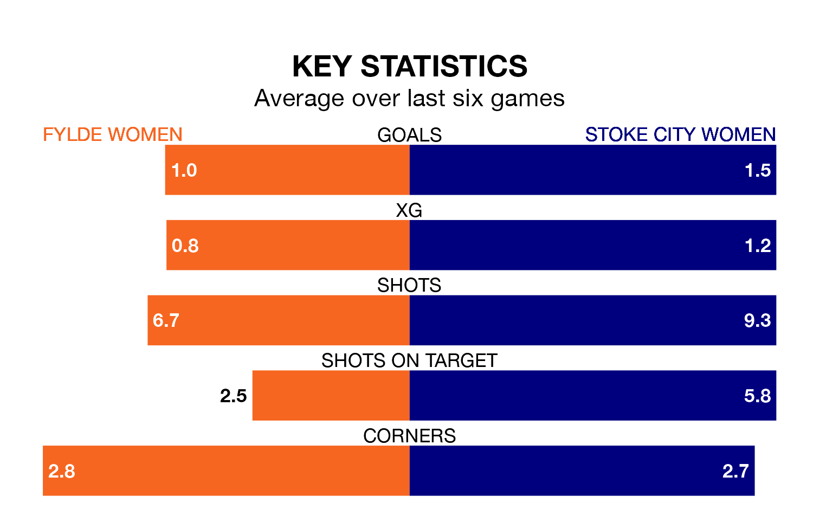

Fylde Women are on a terrible run ahead of hosting Stoke City Women on Sunday, with just two points collected from their last six games.
Fylde have picked up two draws and four losses in their last six Women's National League Premier Division – North games, and face a Stoke City side whose last six games have brought two wins and one draw.
Fylde are bottom of the table after 14 games, of which they have won none and drawn four, earning four points.
Stoke City are four places ahead of the home team in eighth, with five wins and two draws putting them on 17 points.
With 13 goals in 14 games so far this season, Fylde are the league's joint-third-lowest scorers with 0.9 goals per game. And they are conceding more than average, letting in 50 goals at a rate of 3.6 per game.
The visitors, meanwhile, are above average scorers, with 1.9 goals per game, compared to a league average of 1.7. They have conceded 2.2 goals per game.
In the last five years, Fylde and Stoke City have played each other on four occasions. Fylde won three of them and they drew once.
On average, Fylde scored 2.2 goals and Stoke City 1.5 in those matches.
Their last meeting was on March 19, when Fylde won 2-1 away.
Fylde's last match was on February 11, a 0-0 draw against Liverpool Feds.
Stoke City lost 4-1 against Newcastle United Women last time out, on March 3.
Updated: 09:34 (UTC), 08/03/24